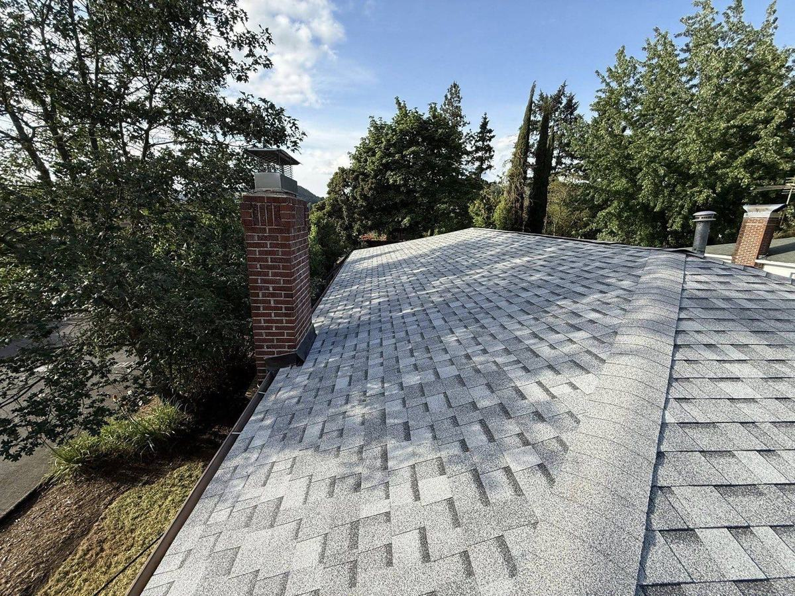

Service Area · Douglas County
Roofing contractor for Sutherlin, Oregon.
Sutherlin has grown from a timber-mill town into one of Douglas County's busiest I-5 corridor communities — newer subdivisions on the edges, mill-era homes near downtown. We cover all of it from our shop in Riddle, one county, one straight shot up the freeway.
Local Knowledge
Two Sutherlins, two kinds of roof work.
Sutherlin is really two housing markets sharing one zip code. Around the old downtown core along Central Avenue, mill-era and mid-century homes carry roofs that have been patched, layered, and weathered for decades. Out on the newer edges of town, the growth years brought subdivisions full of builder-grade roofs that are now hitting their first real maintenance window.
Both face the same north-county weather: 30-plus inches of rain from October to May, hot dry summers, and open-valley wind that finds every loose tab. We treat each type of roof on its own terms — no one-size-fits-all pitch.
- Newer subdivisions — builder-grade three-tab roofs aging early; inspections now prevent replacements later
- Older core near downtown — layered shingles and worn decking; Douglas County requires full tear-off at replacement, which is the right call for these homes anyway
- Open-valley wind — lifted and missing shingles after big fronts; architectural shingles carry better wind ratings
- Permits & code — we handle Douglas County reroof permits and kick-out flashing requirements; here's what the county requires

Services in Sutherlin
Everything your Sutherlin home needs.
Roof Replacement
Owens Corning architectural shingles, full tear-off, permits handled.
Learn more → RoofingRoof Repair
Wind-lifted tabs, leaks, and flashing failures fixed with photo proof.
Learn more → ExteriorSiding
Replacement and repair for mill-era homes and newer builds alike.
Learn more → ExteriorGutter Guards
Set-and-forget protection before the October rains.
Learn more → OutdoorFences
Straight, sturdy fencing for subdivision lots and acreage.
Learn more → MembershipHome Care Membership
Year-round inspections and priority service from $49/month.
Learn more →The Local Difference
Closer than Eugene. Invested like a neighbor.
Sutherlin sits at the north end of Douglas County, so Eugene franchises treat it as their far frontier — and it shows in their scheduling. We're family-owned in Riddle, licensed as Oregon CCB #255729, an Owens Corning contractor, and Douglas County is our entire world. Curious what replacement really costs here? Start with our local cost guide.
Questions
Sutherlin roofing FAQs
Do you really cover Sutherlin from Riddle?
Yes — Sutherlin is a straight shot up I-5, roughly 35 minutes door to door. We schedule north-county work in efficient blocks so travel never becomes your problem, and we're still far closer than Eugene. Call or text (541) 670-5005.
My subdivision home has a builder-grade roof — when should I worry?
Builder-grade three-tab roofs often start losing granules and shedding tabs in high wind well before the 20-year mark. Watch for curling shingles and grit in the gutters. An annual inspection catches it early, and upgrading to architectural shingles at replacement adds wind rating and roughly ten years of life.
What about the older homes near downtown Sutherlin?
Mill-era roofs commonly hide layered shingles, worn flashing, and tired decking. Douglas County requires full tear-off at replacement — no overlays — which is genuinely better for older homes because the decking gets inspected and repaired before new shingles go on.
Every Service, Locally
Everything we do in Sutherlin, in detail.
Dedicated local pages for every service we offer in Sutherlin — what's included, local considerations, and honest answers.
- Roof Replacement in Sutherlin
- Roof Repair in Sutherlin
- Roof Cleaning & Moss Removal in Sutherlin
- Metal Roofing in Sutherlin
- Siding in Sutherlin
- Gutter Cleaning in Sutherlin
- Gutter Guard Installation in Sutherlin
- General Contracting in Sutherlin
- Deck Building in Sutherlin
- Fence Building in Sutherlin
- Flooring in Sutherlin
- Landscaping in Sutherlin
- Pool Installation in Sutherlin
Sutherlin, let's protect your home.
Free estimates from a family-owned Douglas County company — honest answers, local craftsmanship.